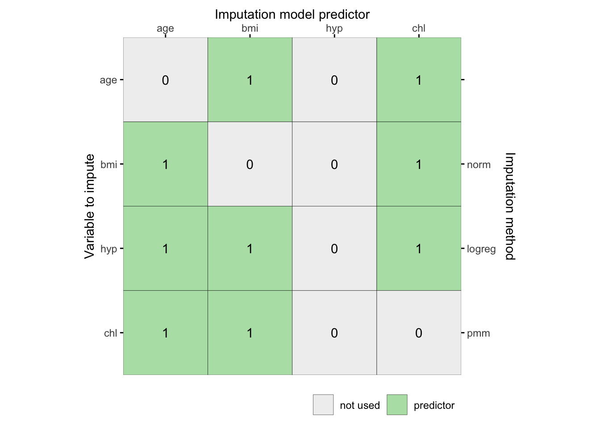

library(mice) # data imputation
library(lattice) # plotting device
library(dplyr) # data manipulation
library(magrittr)# pipes
library(purrr) # functional programmingA one-day crash course in mice
The aim of this guide is to make you familiar with mice in R and to enhance your understanding of multiple imputation, in general. You will learn how to perform and inspect multiple imputations and how to pool the results of analyses performed on multiply-imputed data, how to approach different types of data and how to avoid some of the pitfalls many data scientists may fall into. The main objective is to increase your knowledge and understanding on applications of multiple imputation.
We start by loading (with library()) the necessary packages and fixing the random seed to allow for our outcomes to be replicable.
All the best,
Multiple imputation with mice
We fix the RNG seed to allow for replication of the below results.
set.seed(123)The mice package contains several datasets. Once the package is loaded, these datasets can be used. Have a look at the nhanes dataset (Schafer, 1997, Table 6.14) by typing
nhanes age bmi hyp chl
1 1 NA NA NA
2 2 22.7 1 187
3 1 NA 1 187
4 3 NA NA NA
5 1 20.4 1 113
6 3 NA NA 184
7 1 22.5 1 118
8 1 30.1 1 187
9 2 22.0 1 238
10 2 NA NA NA
11 1 NA NA NA
12 2 NA NA NA
13 3 21.7 1 206
14 2 28.7 2 204
15 1 29.6 1 NA
16 1 NA NA NA
17 3 27.2 2 284
18 2 26.3 2 199
19 1 35.3 1 218
20 3 25.5 2 NA
21 1 NA NA NA
22 1 33.2 1 229
23 1 27.5 1 131
24 3 24.9 1 NA
25 2 27.4 1 186The nhanes dataset is a small data set with non-monotone missing values. It contains 25 observations on four variables: age group, body mass index, hypertension and cholesterol (mg/dL).
To learn more about the data, use one of the two following help commands:
help(nhanes)
?nhanes1. Vary the number of imputations, such that the nhanes set is imputed \(m=3\) times.
The number of imputed data sets can be specified by the m = ... argument. For example, to create just three imputed data sets, specify
imp <- mice(nhanes, m = 3, print=FALSE)The print = FALSE argument omits printing of the iteration history from the output. The main reason to omit printing here is to save space in the document.
2. Change the predictor matrix
The predictor matrix is a square matrix that specifies the variables that can be used to impute each incomplete variable. Let us have a look at the predictor matrix that was used
imp$pred age bmi hyp chl
age 0 1 1 1
bmi 1 0 1 1
hyp 1 1 0 1
chl 1 1 1 0Each variable in the data has a row and a column in the predictor matrix. A value 1 indicates that the column variable was used to impute the row variable. For example, the 1 at entry [bmi, age] indicates that variable age was used to impute the incomplete variable bmi. Note that the diagonal is zero because a variable is not allowed to impute itself. The row of age is redundant, because there were no missing values in age. Even though predictor relations are specified for age, mice will not use these relations because it will never overwrite the observed values with imputations. mice gives you complete control over the predictor matrix, enabling you to choose your own predictor relations. This can be very useful, for example, when you have many variables or when you have clear ideas or prior knowledge about relations in the data at hand.
There are two ways in which you can create a predictor matrix in mice:
- A. You can grab the
predictorMatrixfrom every object returned bymice():
For example, we can use any mice() object fitted to the data to grab the predictorMatrix or we can use mice to quickly initialize a predictor matrix, and change it afterwards, without running the algorithm. This latter approach can be done by setting the maximum number of iterations to maxit=0. This leaves the algorithm at initialization, but generates the necessary inner objects.
ini <- mice(nhanes, maxit=0, print=FALSE)
pred <- ini$pred
pred age bmi hyp chl
age 0 1 1 1
bmi 1 0 1 1
hyp 1 1 0 1
chl 1 1 1 0The object pred contains the predictor matrix from an initial run of mice with zero iterations. It is a square matrix that captures the information about which variables (in the rows) are imputed based on which predictors (in the columns).
- B. We can use
make.predictorMatrix()to generate a predictor matrix from any incomplete data set.
For example,
pred <- make.predictorMatrix(nhanes)
pred age bmi hyp chl
age 0 1 1 1
bmi 1 0 1 1
hyp 1 1 0 1
chl 1 1 1 0Altering the predictor matrix and returning it to the mice algorithm is very simple. For example, the following code removes the variable hyp from the set of predictors, but still leaves it to be predicted by the other variables.
pred[, "hyp"] <- 0
pred age bmi hyp chl
age 0 1 0 1
bmi 1 0 0 1
hyp 1 1 0 1
chl 1 1 0 0Use your new predictor matrix in mice() as follows
imp <- mice(nhanes, predictorMatrix = pred, print = F)As you can see, we can easily feed the new matrix pred to mice. We can also abbreviate the logical operator in the argument print=FALSE.
There is a quickpred() function that applies a quick selection procedure of predictors, which can be handy for datasets containing many variables. See ?quickpred for more info. Selecting predictors according to data relations with a minimum correlation of \(\rho=.30\) can be done by
ini <- mice(nhanes, pred=quickpred(nhanes, mincor=.3), print=F)
ini$pred age bmi hyp chl
age 0 0 0 0
bmi 1 0 0 1
hyp 1 0 0 1
chl 1 1 1 0For large predictor matrices, it can be useful to export them to dedicated spreadsheet software like e.g. Microsoft Excel for easier configuration (e.g. see the xlsx package for easy exporting and importing of Excel files). Importing data is straightforward in RStudio through File > Import Dataset.
3. Inspect the convergence of the algorithm
The mice() function implements an iterative Markov Chain Monte Carlo type of algorithm. Let us have a look at the trace lines generated by the algorithm to study convergence:
imp <- mice(nhanes, print=F)
plot(imp)
The plot shows the mean (left) and standard deviation (right) of the imputed values only. In general, we would like the streams to intermingle (mixing) and be free of any trends at the later iterations (non-stationary). We inspect trends for the imputed values alone, because the observed data does not change. In our case we cannot speak of convergence, especially not for bmi. More iterations or a different model are needed.
The mice algorithm uses random sampling, and therefore, the results will be (perhaps slightly) different if we repeat the imputations with different seeds. In order to get identical mice objects between calls, we can fix the use the seed argument.
imp <- mice(nhanes, seed=123, print=F)where 123 is some arbitrary number that you can choose yourself. Rerunning this command will always yields the same imputed values.
4. Change the imputation method
For each column, the algorithm requires a specification of the imputation method. To see which method was used by default:
imp$meth age bmi hyp chl
"" "pmm" "pmm" "pmm" The variable age is complete and therefore not imputed, denoted by the "" empty string. The other variables have method pmm, which stands for predictive mean matching, the default in mice for numerical and integer data.
In reality, the nhanes data are better described a as mix of numerical and categorical data. Let us take a look at the nhanes2 data frame:
summary(nhanes2) age bmi hyp chl
20-39:12 Min. :20.40 no :13 Min. :113.0
40-59: 7 1st Qu.:22.65 yes : 4 1st Qu.:185.0
60-99: 6 Median :26.75 NA's: 8 Median :187.0
Mean :26.56 Mean :191.4
3rd Qu.:28.93 3rd Qu.:212.0
Max. :35.30 Max. :284.0
NA's :9 NA's :10 and the structure of the data frame
str(nhanes2)'data.frame': 25 obs. of 4 variables:
$ age: Factor w/ 3 levels "20-39","40-59",..: 1 2 1 3 1 3 1 1 2 2 ...
$ bmi: num NA 22.7 NA NA 20.4 NA 22.5 30.1 22 NA ...
$ hyp: Factor w/ 2 levels "no","yes": NA 1 1 NA 1 NA 1 1 1 NA ...
$ chl: num NA 187 187 NA 113 184 118 187 238 NA ...Variable age consists of 3 age categories, while variable hyp is binary. The mice() function takes these properties automatically into account. Impute the nhanes2 dataset
imp <- mice(nhanes2, print=F)
imp$meth age bmi hyp chl
"" "pmm" "logreg" "pmm" Notice that mice has set the imputation method for variable hyp to logreg, which implements multiple imputation by logistic regression.
An up-to-date overview of the methods in mice can be found by
methods(mice) [1] mice.impute.2l.bin mice.impute.2l.lmer
[3] mice.impute.2l.norm mice.impute.2l.pan
[5] mice.impute.2lonly.mean mice.impute.2lonly.norm
[7] mice.impute.2lonly.pmm mice.impute.cart
[9] mice.impute.jomoImpute mice.impute.lasso.logreg
[11] mice.impute.lasso.norm mice.impute.lasso.select.logreg
[13] mice.impute.lasso.select.norm mice.impute.lda
[15] mice.impute.logreg mice.impute.logreg.boot
[17] mice.impute.mean mice.impute.midastouch
[19] mice.impute.mnar.logreg mice.impute.mnar.norm
[21] mice.impute.mpmm mice.impute.norm
[23] mice.impute.norm.boot mice.impute.norm.nob
[25] mice.impute.norm.predict mice.impute.panImpute
[27] mice.impute.passive mice.impute.pmm
[29] mice.impute.polr mice.impute.polyreg
[31] mice.impute.quadratic mice.impute.rf
[33] mice.impute.ri mice.impute.sample
[35] mice.mids mice.theme
see '?methods' for accessing help and source codeLet us change the imputation method for bmi to Bayesian normal linear regression imputation
meth <- make.method(nhanes2)
meth age bmi hyp chl
"" "pmm" "logreg" "pmm" meth["bmi"] <- "norm"
meth age bmi hyp chl
"" "norm" "logreg" "pmm" and run the imputations again.
imp <- mice(nhanes2, meth = meth, print=F)We may now again plot trace lines to study convergence
plot(imp)
5. Extend the number of iterations
Though using just five iterations (the default) often works well in practice, we need to extend the number of iterations of the mice algorithm to confirm that there is no trend and that the trace lines intermingle well. We can increase the number of iterations to 40 by running 35 additional iterations using the mice.mids() function.
imp40 <- mice.mids(imp, maxit=35, print=F)
plot(imp40)
6. Further diagnostic checking. Use function stripplot().
Generally, one would prefer for the imputed data to be plausible values, i.e. values that could have been observed if they had not been missing. In order to form an idea about plausibility, one may check the imputations and compare them against the observed values. If we are willing to assume that the data are missing completely at random (MCAR), then the imputations should have the same distribution as the observed data. In general, distributions may be different because the missing data are MAR (or even MNAR). However, very large discrepancies need to be screened. Let us plot the observed and imputed data of chl by
stripplot(imp, chl~.imp, pch=20, cex=2)
The convention is to plot observed data in blue and the imputed data in red. The figure graphs the data values of chl before and after imputation. Since the PMM method draws imputations from the observed data, imputed values have the same gaps as in the observed data, and are always within the range of the observed data. The figure indicates that the distributions of the imputed and the observed values are similar. The observed data have a particular feature that, for some reason, thedata cluster around the value of 187. The imputations reflect this feature, and are close to the data. Under MCAR, univariate distributions of the observed and imputed data are expected to be identical. Under MAR, they can be different, both in location and spread, but their multivariate distribution is assumed to be identical. There are many other ways to look at the imputed data.
The following command creates a simpler version of the graph from the previous step and adds the plot for bmi.
stripplot(imp)
Remember that bmi was imputed by Bayesian linear regression and (the range of) imputed values may therefore be different than observed values.
Repeated analysis in mice #1
7. Perform the following regression analysis on the multiply imputed data and assign the result to object fit.
[ = _0 + _1 + ]
Let’s run the above model on the imputed data set.
fit <- with(imp, lm(bmi ~ chl))
fitcall :
with.mids(data = imp, expr = lm(bmi ~ chl))
call1 :
mice(data = nhanes2, method = meth, printFlag = F)
nmis :
age bmi hyp chl
0 9 8 10
analyses :
[[1]]
Call:
lm(formula = bmi ~ chl)
Coefficients:
(Intercept) chl
18.67386 0.04157
[[2]]
Call:
lm(formula = bmi ~ chl)
Coefficients:
(Intercept) chl
23.24993 0.01357
[[3]]
Call:
lm(formula = bmi ~ chl)
Coefficients:
(Intercept) chl
20.44776 0.02952
[[4]]
Call:
lm(formula = bmi ~ chl)
Coefficients:
(Intercept) chl
19.98444 0.03425
[[5]]
Call:
lm(formula = bmi ~ chl)
Coefficients:
(Intercept) chl
22.70463 0.02237 The fit object contains the regression summaries for each data set. The new object fit is actually of class mira (multiply imputed repeated analyses).
class(fit)[1] "mira" "matrix"Use the ls() function to what out what is in the object.
ls(fit)[1] "analyses" "call" "call1" "nmis" Suppose we want to find the regression model fitted to the second imputed data set. It can be found as
summary(fit$analyses[[2]])
Call:
lm(formula = bmi ~ chl)
Residuals:
Min 1Q Median 3Q Max
-11.2983 -3.5392 0.0969 2.6823 9.0924
Coefficients:
Estimate Std. Error t value Pr(>|t|)
(Intercept) 23.24993 4.70339 4.943 5.37e-05 ***
chl 0.01357 0.02332 0.582 0.566
---
Signif. codes: 0 '***' 0.001 '**' 0.01 '*' 0.05 '.' 0.1 ' ' 1
Residual standard error: 4.965 on 23 degrees of freedom
Multiple R-squared: 0.01451, Adjusted R-squared: -0.02834
F-statistic: 0.3385 on 1 and 23 DF, p-value: 0.56638. Pool the analyses from object fit.
Pooling the repeated regression analyses can be done simply by typing
pool.fit <- pool(fit)
summary(pool.fit) term estimate std.error statistic df p.value
1 (Intercept) 21.01212500 4.92594605 4.265602 15.18609 0.0006597528
2 chl 0.02825496 0.02535686 1.114292 13.89920 0.2840518295pool.fitClass: mipo m = 5
term m estimate ubar b t dfcom
1 (Intercept) 5 21.01212500 1.985061e+01 3.6786158400 2.426494e+01 23
2 chl 5 0.02825496 5.033792e-04 0.0001163261 6.429706e-04 23
df riv lambda fmi
1 15.18609 0.2223781 0.1819225 0.2718899
2 13.89920 0.2773085 0.2171038 0.3097586which gives the relevant pooled regression coefficients and parameters, as well as the fraction of information about the coefficients missing due to nonresponse (fmi) and the proportion of the variation attributable to the missing data (lambda). The pooled fit object is of class mipo, which stands for multiply imputed pooled object.
Alternatively, we could use a functional programming pipe to achieve the same
fit <- imp %>%
complete("all") %>% # list where each listed element is a completed set
map(lm, formula = bmi ~ chl) %>%
pool() %>%
summary()Have a look at the different workflows that can be adopted with mice in this chapter in Van Buuren’s book.
mice can to pool many analyses from a variety of packages for you (it uses broom to gather all parameters). For flexibility and in order to run custom pooling functions, mice also incorporates a function pool.scalar() which pools univariate estimates of \(m\) repeated complete data analysis conform Rubin’s pooling rules (Rubin, 1987, paragraph 3.1)
The boys data set
9. The boys dataset is part of mice. It is a subset of a large Dutch dataset containing growth measures from the Fourth Dutch Growth Study. Inspect the help for boys dataset and make yourself familiar with its contents.
To learn more about the contents of the data, use one of the two following help commands:
help(boys)
?boys10. Get an overview of the data. Find information about the size of the data, the variables measured and the amount of missingness.
The first 10 cases are:
head(boys, n = 10) age hgt wgt bmi hc gen phb tv reg
3 0.035 50.1 3.650 14.54 33.7 <NA> <NA> NA south
4 0.038 53.5 3.370 11.77 35.0 <NA> <NA> NA south
18 0.057 50.0 3.140 12.56 35.2 <NA> <NA> NA south
23 0.060 54.5 4.270 14.37 36.7 <NA> <NA> NA south
28 0.062 57.5 5.030 15.21 37.3 <NA> <NA> NA south
36 0.068 55.5 4.655 15.11 37.0 <NA> <NA> NA south
37 0.068 52.5 3.810 13.82 34.9 <NA> <NA> NA south
38 0.071 53.0 3.890 13.84 35.8 <NA> <NA> NA west
39 0.071 55.1 3.880 12.77 36.8 <NA> <NA> NA west
43 0.073 54.5 4.200 14.14 38.0 <NA> <NA> NA eastThe last 10 cases are:
tail(boys, n = 10) age hgt wgt bmi hc gen phb tv reg
7329 20.032 184.0 73.0 21.56 56.0 <NA> <NA> NA north
7362 20.117 188.7 89.4 25.10 58.1 G5 P6 25 east
7396 20.281 185.1 81.1 23.67 58.8 G5 P6 20 south
7405 20.323 182.5 69.0 20.71 59.0 <NA> <NA> NA north
7410 20.372 188.7 59.8 16.79 55.2 <NA> <NA> NA west
7418 20.429 181.1 67.2 20.48 56.6 <NA> <NA> NA north
7444 20.761 189.1 88.0 24.60 NA <NA> <NA> NA west
7447 20.780 193.5 75.4 20.13 NA <NA> <NA> NA west
7451 20.813 189.0 78.0 21.83 59.9 <NA> <NA> NA north
7475 21.177 181.8 76.5 23.14 NA <NA> <NA> NA eastWe now have a clear indication that the data are sorted. A simple evaluation
!is.unsorted(boys$age)[1] TRUEconfirms this - !is.unsorted() evaluates the complement of is.unsorted(), so it tests whether the data are sorted. There is no is.sorted function in R.
The dimensions of the boys data set are:
dim(boys)[1] 748 9We see that the boys data set has 748 cases over 9 variables. From those 9 variables
summary(boys) age hgt wgt bmi
Min. : 0.035 Min. : 50.00 Min. : 3.14 Min. :11.77
1st Qu.: 1.581 1st Qu.: 84.88 1st Qu.: 11.70 1st Qu.:15.90
Median :10.505 Median :147.30 Median : 34.65 Median :17.45
Mean : 9.159 Mean :132.15 Mean : 37.15 Mean :18.07
3rd Qu.:15.267 3rd Qu.:175.22 3rd Qu.: 59.58 3rd Qu.:19.53
Max. :21.177 Max. :198.00 Max. :117.40 Max. :31.74
NA's :20 NA's :4 NA's :21
hc gen phb tv reg
Min. :33.70 G1 : 56 P1 : 63 Min. : 1.00 north: 81
1st Qu.:48.12 G2 : 50 P2 : 40 1st Qu.: 4.00 east :161
Median :53.00 G3 : 22 P3 : 19 Median :12.00 west :239
Mean :51.51 G4 : 42 P4 : 32 Mean :11.89 south:191
3rd Qu.:56.00 G5 : 75 P5 : 50 3rd Qu.:20.00 city : 73
Max. :65.00 NA's:503 P6 : 41 Max. :25.00 NA's : 3
NA's :46 NA's:503 NA's :522 function summary() informs us that testicular volume tv has the most missings, followed by the genital and pubic hair stages gen and phb, each with 503 missing cells.
11. As we have seen before, the function md.pattern() can be used to display all different missing data patterns. How many different missing data patterns are present in the boys dataframe and which pattern occurs most frequently in the data?
md.pattern(boys)
age reg wgt hgt bmi hc gen phb tv
223 1 1 1 1 1 1 1 1 1 0
19 1 1 1 1 1 1 1 1 0 1
1 1 1 1 1 1 1 1 0 1 1
1 1 1 1 1 1 1 0 1 0 2
437 1 1 1 1 1 1 0 0 0 3
43 1 1 1 1 1 0 0 0 0 4
16 1 1 1 0 0 1 0 0 0 5
1 1 1 1 0 0 0 0 0 0 6
1 1 1 0 1 0 1 0 0 0 5
1 1 1 0 0 0 1 1 1 1 3
1 1 1 0 0 0 0 1 1 1 4
1 1 1 0 0 0 0 0 0 0 7
3 1 0 1 1 1 1 0 0 0 4
0 3 4 20 21 46 503 503 522 1622There are 13 patterns in total, with the pattern where gen, phb and tv are missing occuring the most.
12. How many patterns occur for which the variable gen (genital Tannerstage) is missing?
mpat <- md.pattern(boys, plot = FALSE)
sum(mpat[, "gen"] == 0)[1] 8Answer: 8 patterns (503 cases)
13. Let us focus more precisely on the missing data patterns. Does the missing data of gen depend on age? One could for example check this by making a histogram of age separately for the cases with known genital stages and for cases with missing genital stages.
To create said histogram in R, a missingness indicator for gen has to be created. A missingness indicator is a dummy variable with value 1 for observed values (in this case genital status) and 0 for missing values. Create a missingness indicator for gen by typing
R <- is.na(boys$gen)
head(R, n = 100) [1] TRUE TRUE TRUE TRUE TRUE TRUE TRUE TRUE TRUE TRUE TRUE TRUE TRUE TRUE TRUE
[16] TRUE TRUE TRUE TRUE TRUE TRUE TRUE TRUE TRUE TRUE TRUE TRUE TRUE TRUE TRUE
[31] TRUE TRUE TRUE TRUE TRUE TRUE TRUE TRUE TRUE TRUE TRUE TRUE TRUE TRUE TRUE
[46] TRUE TRUE TRUE TRUE TRUE TRUE TRUE TRUE TRUE TRUE TRUE TRUE TRUE TRUE TRUE
[61] TRUE TRUE TRUE TRUE TRUE TRUE TRUE TRUE TRUE TRUE TRUE TRUE TRUE TRUE TRUE
[76] TRUE TRUE TRUE TRUE TRUE TRUE TRUE TRUE TRUE TRUE TRUE TRUE TRUE TRUE TRUE
[91] TRUE TRUE TRUE TRUE TRUE TRUE TRUE TRUE TRUE TRUEtail(R, n = 100) [1] TRUE TRUE TRUE TRUE FALSE TRUE FALSE TRUE TRUE TRUE FALSE TRUE
[13] TRUE TRUE TRUE FALSE TRUE TRUE TRUE FALSE FALSE TRUE FALSE TRUE
[25] FALSE TRUE TRUE TRUE FALSE FALSE FALSE TRUE FALSE TRUE TRUE FALSE
[37] TRUE TRUE TRUE FALSE TRUE FALSE TRUE TRUE TRUE FALSE FALSE TRUE
[49] TRUE TRUE FALSE FALSE FALSE TRUE FALSE TRUE TRUE TRUE TRUE FALSE
[61] FALSE FALSE TRUE TRUE FALSE TRUE TRUE TRUE FALSE FALSE TRUE FALSE
[73] FALSE TRUE TRUE FALSE FALSE TRUE FALSE TRUE FALSE FALSE TRUE TRUE
[85] FALSE FALSE FALSE TRUE FALSE FALSE TRUE FALSE FALSE TRUE TRUE TRUE
[97] TRUE TRUE TRUE TRUElength(R)[1] 748As we can see, the missingness indicator tells us for each of the 748 values in gen whether it is missing (TRUE) or observed (FALSE).
A histogram can be made with the function lattice::histogram().
lattice::histogram(boys$gen)
or, equivalently, one could use
lattice::histogram(~ gen, data = boys)
Writing the latter line of code for plots is more efficient than selecting every part of the boys data with the boys$... command, especially if plots become more advanced. The code for a conditional histogram of age given R is
lattice::histogram(~ age | R, data=boys)
The histogram shows that the missingness in gen is not equally distributed across age; or, equivalently, age seems to be differently distributed for observed and missing gen.
14. Impute the boys dataset with mice using all default settings and name the mids (multiply imputed data set) object imp.
imp <- mice(boys, print=FALSE)15. Compare the means of the imputed data with the means of the incomplete data. First, we calculate the observed data means:
boys %>%
select(-phb, -gen, -reg) %>%
colMeans(na.rm = TRUE) age hgt wgt bmi hc tv
9.158866 132.151786 37.153187 18.068556 51.505983 11.893805 and then the means for the \(m\) imputed sets:
imp %>%
mice::complete("all") %>%
map(select, -phb, -gen, -reg) %>%
map(colMeans)$`1`
age hgt wgt bmi hc tv
9.158866 131.097326 37.165870 18.046591 51.638636 8.391711
$`2`
age hgt wgt bmi hc tv
9.158866 131.179813 37.126886 18.017019 51.608289 8.573529
$`3`
age hgt wgt bmi hc tv
9.158866 131.049465 37.124694 18.041511 51.612567 8.422460
$`4`
age hgt wgt bmi hc tv
9.158866 131.102807 37.172328 18.039318 51.597326 8.381016
$`5`
age hgt wgt bmi hc tv
9.158866 131.079011 37.126031 18.045241 51.632086 8.422460 Most means are roughly equal, except the mean of tv, which is much lower in the imputed data sets, when compared to the incomplete data. This makes sense because most genital measures are unobserved for the lower ages. When imputing these values, the means should decrease.
Investigating univariate properties by using functions such as summary(), may not be ideal in the case of hundreds of variables. To extract just the information you need, for all imputed datasets, we can make use of the with() function. To obtain summaries for each imputed tv only, type
imp %>%
with(summary(tv)) %>%
summary()# A tibble: 5 × 6
minimum q1 median mean q3 maximum
<dbl> <dbl> <dbl> <dbl> <dbl> <dbl>
1 1 2 3 8.39 15 25
2 1 2 3 8.57 15 25
3 1 2 4 8.42 15 25
4 1 2 3 8.38 15 25
5 1 2 3 8.42 15 25And to obtain e.g. the means alone, run
imp %>%
with(mean(tv)) %>%
summary()# A tibble: 5 × 1
x
<dbl>
1 8.39
2 8.57
3 8.42
4 8.38
5 8.42Repeated analysis in mice #2
16. Calculate a correlation between all continuous variables for the imputed boys data
There are two ways in which we can calculate the correlation on the imputed data:
- The wrong way: calculate an estimate over the average imputed dataset .
Quite often people are suggesting that using the average imputed dataset - so taking the average over the imputed data set such that any realized cell depicts the average over the corresponding data in the imputed data - would be efficient and conform Rubin’s rules. This is not true. Doing this will yield false inference.
To demonstrate this, let’s ceate the averaged data set and exclude the non-numerical columns:
ave <- imp %>%
mice::complete("long") %>%
group_by(.id) %>%
summarise_all(.funs = mean) %>%
select(-.id, -.imp, -phb, -gen, -reg)
head(ave)# A tibble: 6 × 6
age hgt wgt bmi hc tv
<dbl> <dbl> <dbl> <dbl> <dbl> <dbl>
1 0.035 50.1 3.65 14.5 33.7 2.4
2 0.038 53.5 3.37 11.8 35 4.8
3 0.057 50 3.14 12.6 35.2 6
4 0.06 54.5 4.27 14.4 36.7 2.8
5 0.062 57.5 5.03 15.2 37.3 1.8
6 0.068 55.5 4.66 15.1 37 2 If we now calculate Pearson’s correlation, rounded to two digits:
cor.wrong <- ave %>%
cor() %>%
round(digits = 2)we obtain:
cor.wrong age hgt wgt bmi hc tv
age 1.00 0.98 0.95 0.63 0.86 0.85
hgt 0.98 1.00 0.94 0.60 0.91 0.80
wgt 0.95 0.94 1.00 0.79 0.84 0.86
bmi 0.63 0.60 0.79 1.00 0.59 0.63
hc 0.86 0.91 0.84 0.59 1.00 0.66
tv 0.85 0.80 0.86 0.63 0.66 1.00- The correct way: calculate an estimate for each imputed dataset and average over the estimates
It is best to do a Fisher transformation before pooling the correlation estimates - and a backtransformation afterwards. Therefore we define the following two functions that allow us to transform and backtransform any value:
fisher.trans <- function(x) 1/2 * log((1 + x) / (1 - x))
fisher.backtrans <- function(x) (exp(2 * x) - 1) / (exp(2 * x) + 1)Now, to calculate the correlation on the imputed data
cor <- imp %>%
mice::complete("all") %>%
map(select, -phb, -gen, -reg) %>%
map(stats::cor) %>%
map(fisher.trans)
cor$`1`
age hgt wgt bmi hc tv
age Inf 2.1949805 1.836131 0.7362637 1.2655460 1.177058
hgt 2.1949805 Inf 1.763866 0.6816677 1.5105177 1.034839
wgt 1.8361309 1.7638664 Inf 1.0771222 1.1983711 1.201571
bmi 0.7362637 0.6816677 1.077122 Inf 0.6672945 0.710818
hc 1.2655460 1.5105177 1.198371 0.6672945 Inf 0.760813
tv 1.1770578 1.0348391 1.201571 0.7108180 0.7608130 Inf
$`2`
age hgt wgt bmi hc tv
age Inf 2.1867011 1.834743 0.7419621 1.2769805 1.0965251
hgt 2.1867011 Inf 1.768980 0.6881945 1.5260879 0.9642420
wgt 1.8347431 1.7689796 Inf 1.0827368 1.2084142 1.1199543
bmi 0.7419621 0.6881945 1.082737 Inf 0.6766643 0.6805535
hc 1.2769805 1.5260879 1.208414 0.6766643 Inf 0.7060259
tv 1.0965251 0.9642420 1.119954 0.6805535 0.7060259 Inf
$`3`
age hgt wgt bmi hc tv
age Inf 2.1974934 1.836460 0.7359428 1.2821217 1.1223659
hgt 2.1974934 Inf 1.772847 0.6844300 1.5194216 0.9819699
wgt 1.8364603 1.7728475 Inf 1.0760655 1.2145426 1.1402326
bmi 0.7359428 0.6844300 1.076066 Inf 0.6798264 0.6807598
hc 1.2821217 1.5194216 1.214543 0.6798264 Inf 0.7134531
tv 1.1223659 0.9819699 1.140233 0.6807598 0.7134531 Inf
$`4`
age hgt wgt bmi hc tv
age Inf 2.1981830 1.837219 0.7448022 1.2690084 1.2037732
hgt 2.1981830 Inf 1.767292 0.6927698 1.5153689 1.0409931
wgt 1.8372188 1.7672917 Inf 1.0885021 1.1999863 1.2124756
bmi 0.7448022 0.6927698 1.088502 Inf 0.6779919 0.7273946
hc 1.2690084 1.5153689 1.199986 0.6779919 Inf 0.7706110
tv 1.2037732 1.0409931 1.212476 0.7273946 0.7706110 Inf
$`5`
age hgt wgt bmi hc tv
age Inf 2.1930074 1.832078 0.7271719 1.2772078 1.1963020
hgt 2.1930074 Inf 1.767364 0.6736635 1.5193351 1.0345891
wgt 1.8320779 1.7673643 Inf 1.0644342 1.2100644 1.1947670
bmi 0.7271719 0.6736635 1.064434 Inf 0.6687794 0.7060601
hc 1.2772078 1.5193351 1.210064 0.6687794 Inf 0.7747759
tv 1.1963020 1.0345891 1.194767 0.7060601 0.7747759 InfThe object cor is a list over the \(m\) imputations where each listed index is a correlation matrix. To calculate the average over the correlation matrices, we can add the \(m\) listed indices and divide them by \(m\):
cor.rect <- Reduce("+", cor) / length(cor) # m is equal to the length of the list
cor.rect <- fisher.backtrans(cor.rect)If we compare the wrong estimates in cor.wrong
cor.wrong age hgt wgt bmi hc tv
age 1.00 0.98 0.95 0.63 0.86 0.85
hgt 0.98 1.00 0.94 0.60 0.91 0.80
wgt 0.95 0.94 1.00 0.79 0.84 0.86
bmi 0.63 0.60 0.79 1.00 0.59 0.63
hc 0.86 0.91 0.84 0.59 1.00 0.66
tv 0.85 0.80 0.86 0.63 0.66 1.00with the correct estimates in cor.rect
round(cor.rect, digits = 2) age hgt wgt bmi hc tv
age NaN 0.98 0.95 0.63 0.85 0.82
hgt 0.98 NaN 0.94 0.59 0.91 0.77
wgt 0.95 0.94 NaN 0.79 0.84 0.83
bmi 0.63 0.59 0.79 NaN 0.59 0.61
hc 0.85 0.91 0.84 0.59 NaN 0.63
tv 0.82 0.77 0.83 0.61 0.63 NaNWe see that the wrong estimates in cor.wrong have the tendency to overestimate the correlation coefficient that is correctly combined following Rubin’s rules.
The correct estimates have a diagonal of NaN’s, because the tranformation of a correlation of 1 yields Inf and the backtransformation of Inf has no representation in real number space. We know the diagonal is supposed to be 1, so we can simply correct this
diag(cor.rect) <- 1
cor.rect age hgt wgt bmi hc tv
age 1.0000000 0.9754574 0.9503445 0.6274678 0.8549246 0.8207806
hgt 0.9754574 1.0000000 0.9433975 0.5942075 0.9083741 0.7663102
wgt 0.9503445 0.9433975 1.0000000 0.7923715 0.8355588 0.8254865
bmi 0.6274678 0.5942075 0.7923715 1.0000000 0.5876778 0.6050764
hc 0.8549246 0.9083741 0.8355588 0.5876778 1.0000000 0.6322381
tv 0.8207806 0.7663102 0.8254865 0.6050764 0.6322381 1.0000000
Why does the average data set not serve as a good basis for analysis?
In FIMD v2, paragraph 5.1.2 Stef mentions the following:
The average workflow is faster and easier than the correct methods, since there is no need to replicate the analyses \(m\) times. In the words of Dempster and Rubin (1983), this workflow is
seductive because it can lull the user into the pleasurable state of believing that the data are complete after all.
The ensuing statistical analysis does not know which data are observed and which are missing, and treats all data values as real, which will underestimate the uncertainty of the parameters. The reported standard errors and p-values after data-averaging are generally too low. The correlations between the variables of the averaged data will be too high. For example, the correlation matrix in the average data are more extreme than the average of the \(m\) correlation matrices, which is an example of ecological fallacy. As researchers tend to like low p-values and high correlations, there is a cynical reward for the analysis of the average data. However, analysis of the average data cannot give a fair representation of the uncertainties associated with the underlying data, and hence is not recommended.
So, please stay away from averaging the imputed data sets. Instead, use the correct workflow of analyzing the imputed sets seperately and combining the inference afterwards.
The importance of the imputation model
The mammalsleep dataset is part of mice. It contains the Allison and Cicchetti (1976) data for mammalian species. To learn more about this data, type
help(mammalsleep)17. Get an overview of the data.
Find information about the size of the data, the variables measured and the amount of missingness.
head(mammalsleep) species bw brw sws ps ts mls gt pi sei odi
1 African elephant 6654.000 5712.0 NA NA 3.3 38.6 645 3 5 3
2 African giant pouched rat 1.000 6.6 6.3 2.0 8.3 4.5 42 3 1 3
3 Arctic Fox 3.385 44.5 NA NA 12.5 14.0 60 1 1 1
4 Arctic ground squirrel 0.920 5.7 NA NA 16.5 NA 25 5 2 3
5 Asian elephant 2547.000 4603.0 2.1 1.8 3.9 69.0 624 3 5 4
6 Baboon 10.550 179.5 9.1 0.7 9.8 27.0 180 4 4 4summary(mammalsleep) species bw brw
African elephant : 1 Min. : 0.005 Min. : 0.14
African giant pouched rat: 1 1st Qu.: 0.600 1st Qu.: 4.25
Arctic Fox : 1 Median : 3.342 Median : 17.25
Arctic ground squirrel : 1 Mean : 198.790 Mean : 283.13
Asian elephant : 1 3rd Qu.: 48.202 3rd Qu.: 166.00
Baboon : 1 Max. :6654.000 Max. :5712.00
(Other) :56
sws ps ts mls
Min. : 2.100 Min. :0.000 Min. : 2.60 Min. : 2.000
1st Qu.: 6.250 1st Qu.:0.900 1st Qu.: 8.05 1st Qu.: 6.625
Median : 8.350 Median :1.800 Median :10.45 Median : 15.100
Mean : 8.673 Mean :1.972 Mean :10.53 Mean : 19.878
3rd Qu.:11.000 3rd Qu.:2.550 3rd Qu.:13.20 3rd Qu.: 27.750
Max. :17.900 Max. :6.600 Max. :19.90 Max. :100.000
NA's :14 NA's :12 NA's :4 NA's :4
gt pi sei odi
Min. : 12.00 Min. :1.000 Min. :1.000 Min. :1.000
1st Qu.: 35.75 1st Qu.:2.000 1st Qu.:1.000 1st Qu.:1.000
Median : 79.00 Median :3.000 Median :2.000 Median :2.000
Mean :142.35 Mean :2.871 Mean :2.419 Mean :2.613
3rd Qu.:207.50 3rd Qu.:4.000 3rd Qu.:4.000 3rd Qu.:4.000
Max. :645.00 Max. :5.000 Max. :5.000 Max. :5.000
NA's :4 str(mammalsleep)'data.frame': 62 obs. of 11 variables:
$ species: Factor w/ 62 levels "African elephant",..: 1 2 3 4 5 6 7 8 9 10 ...
$ bw : num 6654 1 3.38 0.92 2547 ...
$ brw : num 5712 6.6 44.5 5.7 4603 ...
$ sws : num NA 6.3 NA NA 2.1 9.1 15.8 5.2 10.9 8.3 ...
$ ps : num NA 2 NA NA 1.8 0.7 3.9 1 3.6 1.4 ...
$ ts : num 3.3 8.3 12.5 16.5 3.9 9.8 19.7 6.2 14.5 9.7 ...
$ mls : num 38.6 4.5 14 NA 69 27 19 30.4 28 50 ...
$ gt : num 645 42 60 25 624 180 35 392 63 230 ...
$ pi : int 3 3 1 5 3 4 1 4 1 1 ...
$ sei : int 5 1 1 2 5 4 1 5 2 1 ...
$ odi : int 3 3 1 3 4 4 1 4 1 1 ...As we have seen before, the function md.pattern() can be used to display all different missing data patterns. How many different missing data patterns are present in the mammalsleep dataframe and which pattern occurs most frequently in the data?
md.pattern(mammalsleep)
species bw brw pi sei odi ts mls gt ps sws
42 1 1 1 1 1 1 1 1 1 1 1 0
9 1 1 1 1 1 1 1 1 1 0 0 2
3 1 1 1 1 1 1 1 1 0 1 1 1
2 1 1 1 1 1 1 1 0 1 1 1 1
1 1 1 1 1 1 1 1 0 1 0 0 3
1 1 1 1 1 1 1 1 0 0 1 1 2
2 1 1 1 1 1 1 0 1 1 1 0 2
2 1 1 1 1 1 1 0 1 1 0 0 3
0 0 0 0 0 0 4 4 4 12 14 38Answer: 8 patterns in total, with the pattern where everything is observed occuring the most (42 times).
18. Generate five imputed datasets with the default method pmm. Give the algorithm 10 iterations.
imp1 <- mice(mammalsleep, maxit = 10, print=F)Warning: Number of logged events: 525We ignore the loggedEvents for now: it contains a list of all decisions and exclusions that are performed by the mice algorithm. To inspect the trace lines for assessing algorithmic convergence:
plot(imp1)

19. Perform a regression analysis on the imputed dataset with sws as dependent variable and log10(bw) and odi as independent variables.
fit1 <- with(imp1, lm(sws ~ log10(bw) + odi))20. Pool the regression analysis and inspect the pooled analysis.
est1 <- pool(fit1)
est1Class: mipo m = 5
term m estimate ubar b t dfcom df
1 (Intercept) 5 9.5998071 0.716005 0.0044472483 0.7213417 59 56.63044
2 log10(bw) 5 -1.7067589 0.101078 0.0009488372 0.1022166 59 56.36205
3 odi 5 -0.4906127 0.089521 0.0008714993 0.0905668 59 56.33148
riv lambda fmi
1 0.007453436 0.007398294 0.04069007
2 0.011264610 0.011139132 0.04445540
3 0.011682166 0.011547269 0.04486694summary(est1) term estimate std.error statistic df p.value
1 (Intercept) 9.5998071 0.8493184 11.302954 56.63044 3.830663e-16
2 log10(bw) -1.7067589 0.3197134 -5.338403 56.36205 1.735706e-06
3 odi -0.4906127 0.3009432 -1.630250 56.33148 1.086282e-01The fmi and lambda are much too high. This is due to species being included in the imputation model. Because there are 62 species and mice automatically converts factors (categorical variables) to dummy variables, each species is modeled by its own imputation model.
21. Impute mammalsleep again, but now exclude species from the data.
imp2 <- mice(mammalsleep[ , -1], maxit = 10, print = F)Warning: Number of logged events: 2422. Compute and pool the regression analysis again.
fit2 <- with(imp2, lm(sws ~ log10(bw) + odi))
est2 <- pool(fit2)
est2Class: mipo m = 5
term m estimate ubar b t dfcom df
1 (Intercept) 5 11.5025914 0.60076645 0.084995992 0.70276164 59 38.82950
2 log10(bw) 5 -1.1361904 0.08480987 0.008643307 0.09518184 59 44.19956
3 odi 5 -0.8721041 0.07511290 0.018898691 0.09779133 59 27.58833
riv lambda fmi
1 0.1697751 0.1451348 0.1860086
2 0.1222967 0.1089700 0.1467259
3 0.3019246 0.2319063 0.2821277summary(est2) term estimate std.error statistic df p.value
1 (Intercept) 11.5025914 0.8383088 13.721187 38.82950 1.782002e-16
2 log10(bw) -1.1361904 0.3085155 -3.682766 44.19956 6.254366e-04
3 odi -0.8721041 0.3127161 -2.788805 27.58833 9.474433e-03Note that the fmi and lambda have dramatically decreased. The imputation model has been greatly improved.
23. Plot the trace lines for the new imputations
plot(imp2)

Even though the fraction of information missing due to nonresponse (fmi) and the relative increase in variance due to nonresponse (lambda) are nice and low, the convergence turns out to be a real problem. The reason is the structure in the data. Total sleep (ts) is the sum of paradoxical sleep (ps) and short wave sleep (sws). This relation is ignored in the imputations, but it is necessary to take this relation into account. mice offers a routine called passive imputation, which allows users to take transformations, combinations and recoded variables into account when imputing their data.
Passive Imputation
There is often a need for transformed, combined or recoded versions of the data. In the case of incomplete data, one could impute the original, and transform the completed original afterwards, or transform the incomplete original and impute the transformed version. If, however, both the original and the transformed version are needed within the imputation algorithm, neither of these approaches work: One cannot be sure that the transformation holds between the imputed values of the original and transformed versions. mice has a built-in approach, called passive imputation, to deal with situations as described above. The goal of passive imputation is to maintain the consistency among different transformations of the same data. As an example, consider the following deterministic function in the boys data [ = ] or the compositional relation in the mammalsleep data: [ = +]
24. Use passive imputation to impute the deterministic sleep relation in the mammalsleep data. Name the new multiply imputed dataset pas.imp.
First, we create a method vector:
meth <- make.method(mammalsleep)
methspecies bw brw sws ps ts mls gt pi sei
"" "" "" "pmm" "pmm" "pmm" "pmm" "pmm" "" ""
odi
"" and a predictorMatrix:
pred <- make.predictorMatrix(mammalsleep)
pred species bw brw sws ps ts mls gt pi sei odi
species 0 1 1 1 1 1 1 1 1 1 1
bw 1 0 1 1 1 1 1 1 1 1 1
brw 1 1 0 1 1 1 1 1 1 1 1
sws 1 1 1 0 1 1 1 1 1 1 1
ps 1 1 1 1 0 1 1 1 1 1 1
ts 1 1 1 1 1 0 1 1 1 1 1
mls 1 1 1 1 1 1 0 1 1 1 1
gt 1 1 1 1 1 1 1 0 1 1 1
pi 1 1 1 1 1 1 1 1 0 1 1
sei 1 1 1 1 1 1 1 1 1 0 1
odi 1 1 1 1 1 1 1 1 1 1 0We add the call for passive imputation to the ts element in the meth object
meth["ts"]<- "~ I(sws + ps)"
meth species bw brw sws ps
"" "" "" "pmm" "pmm"
ts mls gt pi sei
"~ I(sws + ps)" "pmm" "pmm" "" ""
odi
"" and set the predictor relations for ts with sws and ps to 0. Also, we have to exclude Species as a predictor
pred[c("sws", "ps"), "ts"] <- 0
pred[, "species"] <- 0
pred species bw brw sws ps ts mls gt pi sei odi
species 0 1 1 1 1 1 1 1 1 1 1
bw 0 0 1 1 1 1 1 1 1 1 1
brw 0 1 0 1 1 1 1 1 1 1 1
sws 0 1 1 0 1 0 1 1 1 1 1
ps 0 1 1 1 0 0 1 1 1 1 1
ts 0 1 1 1 1 0 1 1 1 1 1
mls 0 1 1 1 1 1 0 1 1 1 1
gt 0 1 1 1 1 1 1 0 1 1 1
pi 0 1 1 1 1 1 1 1 0 1 1
sei 0 1 1 1 1 1 1 1 1 0 1
odi 0 1 1 1 1 1 1 1 1 1 0This avoids circularity problems where ts would feed back into sws and ps, from which it is calculated:
We can then run the imputations as
pas.imp <- mice(mammalsleep,
meth = meth,
pred = pred,
maxit = 50,
seed = 123,
print = F)We used a custom predictor matrix and method vector to tailor our imputation approach to the passive imputation problem. We made sure to exclude ts as a predictor for the imputation of sws and ps to avoid circularity.
We also gave the imputation algorithm 10 iterations to converge and fixed the seed to 123 for this mice instance. This means that even when people do not fix the overall R seed for a session, exact replication of results can be obtained by simply fixing the seed for the random number generator within mice. Naturally, the same input (data) is each time required to yield the same output (mids-object).
When we study convergence, we see that the apparent non-convergence that we saw before has now disappeared with the use of passive imputation for the deterministic system (ts, ps, sws).
plot(pas.imp)

For fun
What you shouldn’t do with passive imputation!
Never set all relations fixed. You will remain with the starting values and waste your computer’s energy (and your own).
meth<- make.method(boys)
pred <- make.predictorMatrix(boys)
meth["bmi"]<- "~ I(wgt / (hgt / 100)^2)"
meth["wgt"]<- "~ I(bmi * (hgt / 100)^2)"
meth["hgt"]<- "~ I(sqrt(wgt / bmi) * 100)"
pred[c("bmi", "wgt", "hgt"), ] <- 0
imp.path <- mice(boys,
meth=meth,
pred=pred,
seed=123)
iter imp variable
1 1 hgt wgt bmi hc gen phb tv reg
1 2 hgt wgt bmi hc gen phb tv reg
1 3 hgt wgt bmi hc gen phb tv reg
1 4 hgt wgt bmi hc gen phb tv reg
1 5 hgt wgt bmi hc gen phb tv reg
2 1 hgt wgt bmi hc gen phb tv reg
2 2 hgt wgt bmi hc gen phb tv reg
2 3 hgt wgt bmi hc gen phb tv reg
2 4 hgt wgt bmi hc gen phb tv reg
2 5 hgt wgt bmi hc gen phb tv reg
3 1 hgt wgt bmi hc gen phb tv reg
3 2 hgt wgt bmi hc gen phb tv reg
3 3 hgt wgt bmi hc gen phb tv reg
3 4 hgt wgt bmi hc gen phb tv reg
3 5 hgt wgt bmi hc gen phb tv reg
4 1 hgt wgt bmi hc gen phb tv reg
4 2 hgt wgt bmi hc gen phb tv reg
4 3 hgt wgt bmi hc gen phb tv reg
4 4 hgt wgt bmi hc gen phb tv reg
4 5 hgt wgt bmi hc gen phb tv reg
5 1 hgt wgt bmi hc gen phb tv reg
5 2 hgt wgt bmi hc gen phb tv reg
5 3 hgt wgt bmi hc gen phb tv reg
5 4 hgt wgt bmi hc gen phb tv reg
5 5 hgt wgt bmi hc gen phb tv regplot(imp.path, c("hgt", "wgt", "bmi"))
We named the mids object imp.path, because the nonconvergence is pathological in this example!
Conclusion
We have seen that the practical execution of multiple imputation and pooling is straightforward with the R package mice. The package is designed to allow you to assess and control the imputations themselves, the convergence of the algorithm and the distributions and multivariate relations of the observed and imputed data.
It is important to ‘gain’ this control as a user. After all, we are imputing values and we aim to properly adress the uncertainty about the missingness problem.
Additional materials
A more detailed practical guide to mice in R can be found here
References
Rubin, D. B. Multiple imputation for nonresponse in surveys. John Wiley & Sons, 1987. Amazon
Schafer, J.L. (1997). Analysis of Incomplete Multivariate Data. London: Chapman & Hall. Table 6.14. Amazon
Van Buuren, S. and Groothuis-Oudshoorn, K. (2011). mice: Multivariate Imputation by Chained Equations in R. Journal of Statistical Software, 45(3), 1-67. pdf
- End of practical
sessionInfo()R version 4.2.2 (2022-10-31)
Platform: aarch64-apple-darwin20 (64-bit)
Running under: macOS Ventura 13.1
Matrix products: default
BLAS: /Library/Frameworks/R.framework/Versions/4.2-arm64/Resources/lib/libRblas.0.dylib
LAPACK: /Library/Frameworks/R.framework/Versions/4.2-arm64/Resources/lib/libRlapack.dylib
locale:
[1] en_US.UTF-8/en_US.UTF-8/en_US.UTF-8/C/en_US.UTF-8/en_US.UTF-8
attached base packages:
[1] stats graphics grDevices utils datasets methods base
other attached packages:
[1] purrr_1.0.1 magrittr_2.0.3 dplyr_1.1.0 lattice_0.20-45
[5] mice_3.15.0
loaded via a namespace (and not attached):
[1] Rcpp_1.0.10 rstudioapi_0.14 knitr_1.42 MASS_7.3-58.1
[5] tidyselect_1.2.0 R6_2.5.1 rlang_1.1.0 fastmap_1.1.1
[9] fansi_1.0.4 tools_4.2.2 nnet_7.3-18 grid_4.2.2
[13] broom_1.0.4 xfun_0.37 utf8_1.2.3 cli_3.6.0
[17] withr_2.5.0 htmltools_0.5.4 yaml_2.3.7 digest_0.6.31
[21] tibble_3.2.0 lifecycle_1.0.3 tidyr_1.3.0 htmlwidgets_1.6.1
[25] vctrs_0.6.0 glue_1.6.2 evaluate_0.20 rmarkdown_2.20
[29] compiler_4.2.2 pillar_1.8.1 backports_1.4.1 generics_0.1.3
[33] jsonlite_1.8.4 pkgconfig_2.0.3